Guys. This is a republish of my most popular post today 17JAN25.
What is more, I am startled that someone dug out this ancient post, now, over four years old.
In this post, written in 2021, I predicted what 2025 would look like.
And, to my surprise, at the end of the post... every single one of my predictions has come true, or are in the process of becoming true.
Except for one item: nuclear war.
Of course, we are only 17 days into 2025, so it is way to early to see THAT prediction has validity. Never the less, aside from some trivial issues, just about all of my trend-line predictions, and overall global conditions in 2025 has became reality.
Long term MM followers please take note, and you all might really get something out of this repost. -MM
A comparison between contemporaneous reality and the John Titor narrative and what we can probably expect in the next few years
Here, in this article, we look at the John Titor narrative (or predictions) and compare them to what we are currently experiencing on our own (shared) time-lines.
Obviously the dates and the events that he described are at variance with what is going on in the world today.
This is to be expected after all. He entered our world-line template with a 2% deviance from his, AND both of his two presence(s) altered our general trajectory for mass consciousness migration. So of course, what we are experiencing today and what we can expect, will be different from what his time-line described.
I argue that while his narrative differs from our reality, there are enough similarities to be able to predict GENERAL TRENDS in our domestic and geo-Political future.
However, it is our shared consciousness that is driving the variances on the shared world-line template, and anything can happen.
Here, I will try to make some predictions on what I am observing and how they vary from the John Titor narrative.
Quick Review of terminology
Here’s a quick handy-dandy illustration to help you all from getting confused with unfamiliar terms or confusion.
The pre-birth world-line template is that surface that our travels tend to follow. We can “slide off” that surface template by techniques that I have discussed in other posts as part of the Prayer / Affirmation Campaign posts. In which case we enter a new world-line template.
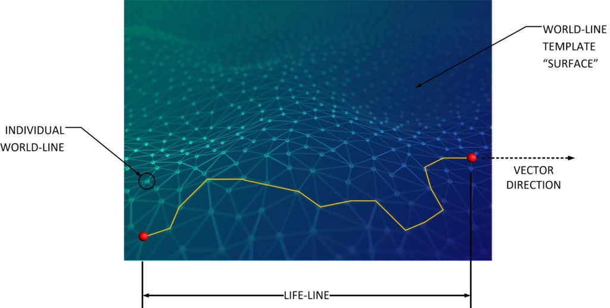
Of course the John Titor narrative uses none of these terms.
We, here on Metallicman, use these terms to explain movement in the MWI. And it is with these terms that we will continue to discuss the similarities, the trends and the variances from what we observe and what John Titor reported.
Who is John Titor?
From the late 1990’s until around 2001, the Internet was “rocked” by the sudden appearance and subsequent disappearance of a Mr. John Titor. This person claimed to be a “time traveler” by using inter-dimensional travel.
He was rapidly dismissed as a hoax, in unity, by all the major debunking organizations, and his posts mysteriously disappeared off the Internet. Since then, all the sources that he posted on all found that their files related to John Titor were all corrupted and could not be reclaimed.
That was the case for over a decade.
Then, in 2014, a number of private individuals managed to piece together independently saved dialogs relating to John Titor. They constructed numerous websites that hosted these reclaimed dialogs, and posted them on the Internet for others to view.
It is the official belief here on Metallicman that the narrative by this John Titor fellow has much more validity... ... than the claim that it is simply a fictional story designed to amuse internet readers. However, our belief is that the John Titor time-line is substantially different from the one where most (of the MM readership) reside. This significant difference is very important to understand the validity and accuracy of his descriptions. Thus you cannot, and should not, take his narrative as a 100% accurate predictor of events on our world-line template. But instead, rather look at the TRENDS that he recounted and compare them to what we are experiencing.
If you wish to read his posts, and MM evaluations of his technology, you might find visiting the Metallicman Index on this subject enlightening.
Is his predictions accurate?
I have no problems with the physics involved in his dimensional travel, or his “time travel” mechanism and mounting vehicle. It’s a method and a technique. It also solves certain problems that he did not get into because his readership was unaware of these other issues that crop up in dimensional travel.
One of the problems with world-line travel is the great diversity of world-lines. You can "clamp down" and lock onto very similar world-lines without much problem with his gravity sensors. But that is where you are stuck. If you wanted to go to a specific types of world-line, such as one where all Pizza has pineapple on it, you will be out of luck. Not that it would be a problem mind you. Pizza with pineapple? Yuck! The way around this is to additionally measure other criteria other than gravity. The obvious is <redacted> but also <redacted> and other features similar to that are also important and can be used and are actually easy to measure. Obviously, you just need to use the appropriate filters on your sensors, and then the complete sensor kit would allow for a great deal of latitude in your world-line adventures.
His “predictions” are descriptive of [1] a completely different time-line and [2] a completely different world-line template. Therefore, it is like comparing apples to oranges. Both are fruits, but that is where the similarities end.
You simply cannot say that the future he described awaits us on this time-line. It simply does not.
But you CAN say that the same trends that he has described would be the same.
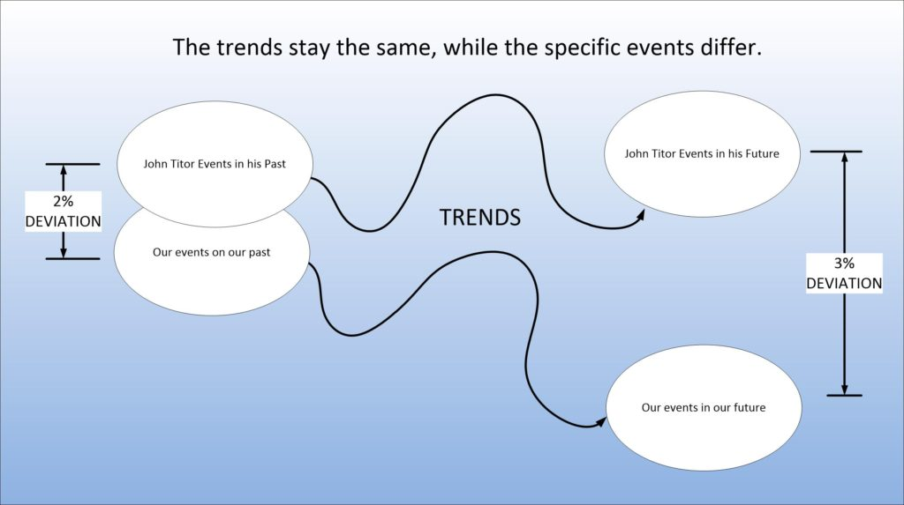
Why would our world-line template be different from his world-line template?
If both of our time-lines are different, how could the trends be the same?
It’s actually very simple. A change in trends are variances and deviations from world lines in excess of 4-5%. And he flatly described a similarity to our time-line or world-line template in the 1-2% range. Thus while the individual events, and times might be quite different, the trends would stay the same.
And what trends would stay the same?
Well, I would say that the trends that would stay the same, but manifest differently would include…
- An American second Civil War
- A major war with an Asian nation or two or three simultaneously.
- Cultural evolution and changes such as social media.
Now that being said, we KNOW that the world-line template and time-line differs substantially from ours.
- His provided dates are off by ten years or more.
- Certain events that he described evolved differently.
- The Geo-political relationships differ substantially from his descriptions.
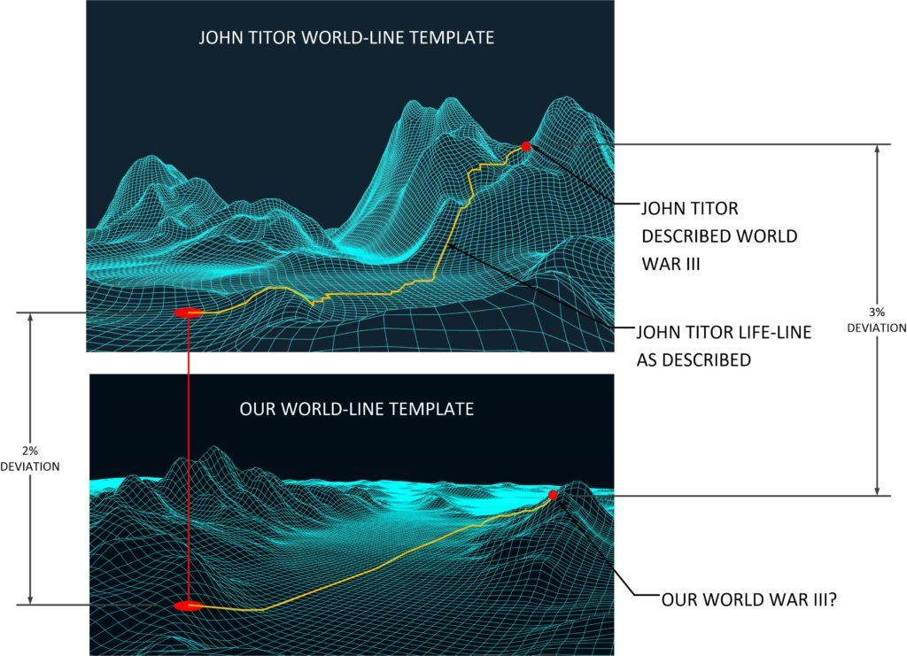
What I know in my role with MAJ
Now for the good news.
Yes, I shouldn’t admit this. But, I do have an idea of what lies ahead – in general. Not much. Just a few, a precious few, glimpses of the future. And none of the glimpses are really bad. Meaning that, for me personally, and for my life my post-MAJestic retirement will be pleasant and tranquil.
How do I know this? Well, it's a long and complicated story, and I will write about my retirement sequence in ADC Pine Bluff in later articles. But for now, just know that my future as I have seen it, does not in any way, resemble the John Titor narrative personally.
I know that my location within China will be a safe one. And that (for the most part) where I live and retire within will avoid most all of the turmoil that the United States will go through.
I know that that is selfish, but it’s all that I have to go on. I was promised a “safe place’ from which to retire. And here I am in China. So I am assuming that all things that are said and done, that maybe the entire world will go through changes. But my “neck of the woods” will be relatively calm and stable.
But…
…I might be wrong.
Of course, there could be changes that might whisk me away from here, and go somewhere else. And maybe then this period in my life is not what I think it is. Who knows? But my “gut feeling” for what ever it is worth is that China is where I am retiring to and where I will spend the rest of my life.
We will see how correct I am. You do realize that I am often wrong. A full 50% of the time, don’t you know. LOL.
Of course, a nuclear explosion in my city could also end my life, but still fulfill the personal prophecy. LOL.
So, yeah. The John Titor narrative does not match what I have personally experienced on this world-line template, nor does it match the projections of my future.
But that is just me.
Now, what this tells me is that the John Titor narrative the Russia goes “ape shit” and starts wiping out the entire globe; Europe, America, The Middle East, and China just does NOT HAPPEN. Not on this shared world-line template.
And while we (our template and John Titor’s) share the same trends they manifest quite differently. And we will discuss that here…
Comparing some of the things that I anticipate will happen to the John Titor narrative
On the assumption that the knowledge that John Titor imparted in regards to his temporal displacement mechanism is beyond that of a casual hoaxer…
… we can assume that he is what he said he was, but that is of little use to us at all. Two different world-lines and time-lines and world-line templates have very little bearing and connection to each other.
But the trends do.
And here we will concentrate on the trends. Those 2.5% to 4% deviations that both of our world-line templates share.
And using that comparison we can extrapolate certain predictive trends.
Much the same way that we use the generational theory of the fourth turning writings to develop predictive trends as well.
And in this post we will be using both tools to look at our comparatively shared futures.
What John Titor said…
John Titor said many things that do not match the world as we see it today. In his world, way back twenty or so years ago he viewed the world as a mixture of independent nations all pretty much duplicating the trends in American (with the exception of South America).
And while his domestic and social trends seem to parallel the events that have followed since, they are often wildly wrong.
Certainly, today 7JAN21, it seems that the United States is getting embroiled in the very stirrings of a Civil War, that is not guaranteed. But it certainly does seem that way, doesn’t it?
- NATIONAL GUARD SECURES CAPITOL
- MAGA TURNS TERROR
- SHOCKING IMAGES
- CALLS FOR TRUMP REMOVAL ESCALATE
- TAKE HIS TWITTER!
- BIDEN WARNS SEDITION
- NATION SHAKEN TO CORE
But I can tell you’se guys personally that these kinds of details vary substantially from one world-line to the next. They mean nothing. Though the TRENDs might be maintained. Trends…
- A disputed election.
- A President that refuses to leave the White House.
- Riots or rallies for one party or the other.
- The news media freaks out.
So let’s look at what he said, then compare that to what we know, and then extrapolate from there…
John Titor made this statement…
The year 2008 was a general date by which time everyone will realize the world they thought they were living in was over. The civil war in the United States will start in 2004. I would describe it as having a Waco type event every month that steadily gets worse. The conflict will consume everyone in the US by 2012 and end in 2015 with a very short WWIII.
The only way that you can possible reconcile these dates with our time line is to add ten years to the dates. Creating this…
The year 2018 was a general date by which time everyone will realize the world they thought they were living in was over. The civil war in the United States will start in 2014. I would describe it as having a Waco type event every month that steadily gets worse. The conflict will consume everyone in the US by 2022 and end in 2025 with a very short WWIII.
Which pretty much makes sense and does agree with the Generational Theory of the Fourth Turning Cycles…
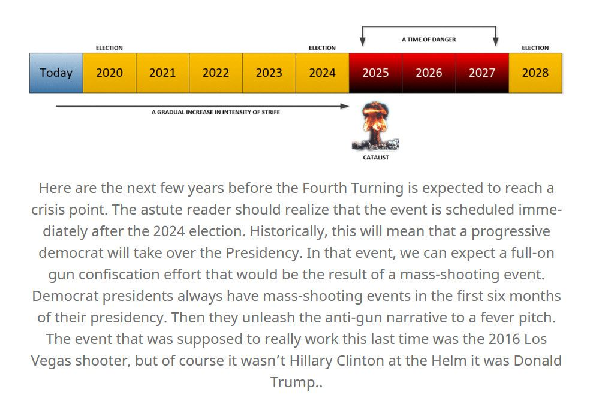
Yet, you know, if you forget the details and the dates you just look at the trends. And the trends are what is being duplicated.
Trends…
- A point in time when people realize that America is not what they thought it was.
- The start of a Civil War at some level of activity.
- America gets involved in a World War III.
But then what?
I can, and will argue that anyone can massage any information to make it fit into what ever form one wants to justify their arguments. And that is something that we just don’t want to do here.
Let’s see some of the other things that he has said…
The United States is still a representative republic in 2046 but it was touch and go for a while. After the war, the U.S. had divided into 5 general areas based on their economic and defensive strengths. Many people blamed the government organization for the war and the last Constitutional Congress was held in 2020 to officially scrap the Constitution and start over. Fortunately, this exercise in anger pointed out how hard it was to come up with anything better. It was decided the document wasn’t at fault. As a result, there have been a few small changes to the Constitution and the executive branch but you would easily recognize it. The average citizen is more educated about the Constitution and aware of the rights and responsibilities it gives them. Federal power has been decentralized and the focus of daily politics is in the state senates. Federal law has also been streamlined but much harder to change or make additions to.
Well, who knows what will happen? In my mind, however, this is overly optimistic given our contemporaneous events. The idea that the Federal Constitution would be maintained, and that all the State Constitutions would regain their power back from the federal government is a long-shot.
I cannot say what any TRENDS that this might represent, but rather that this little bit of trivia describes an evolutionary result within his origination life-line. And that the division of power on the many other world-lines could very dramatically diverge from this point outward.
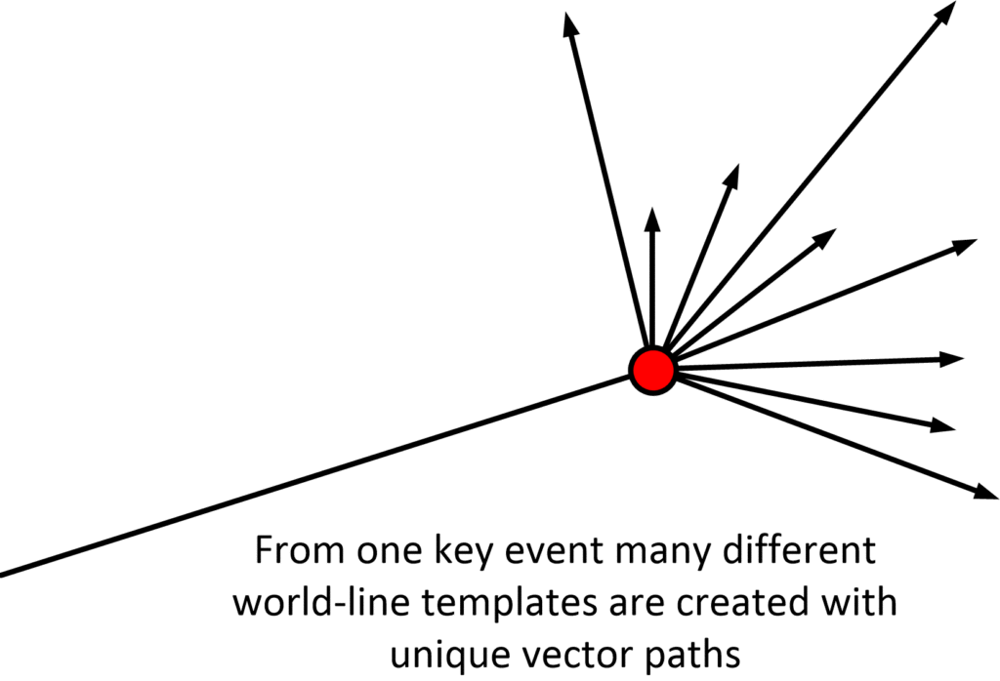
John Titor described his “future”
Though, this sounds like is a very strong parallel with contemporaneous events.
“This is one example of a theory involving “time shells” progressing in size and intensity around a gravitational point from all matter. The more massive the object, the larger and more influential the time shells around it (like an onion). — Like an isobaric map of potential time lines and “intentions”. “Perhaps I should let you all in on a little secret. No one likes you in the future."
He predicted the “Federal Police”, which was the DHS that was established by President George Bush after 9-11.
From the age of 8 to 12, we lived away from the cities and spent most of our time in a farm community with other families avoiding conflict with the federal police and national guard. By that time, it was pretty clear that we were not going back to what we had and the division between the “cities” and the “country” was well defined.
The John Titor future does not resemble our world-line template at all…
And he pretty much said that Russia would go “ape shit” and blow the shit out of American, Europe and China…
The civil war ended in 2015 when Russia attacked the U.S. cities (our enemy), China and Europe. As unusual and bad as my childhood might seem, I wouldn’t trade it for anything. Africa is not a pleasant place to be in 2036 although I would characterize it as recovering.
But the thing is, on our world-line, not only isn’t Europe and China enemies with Russia, but they actively trade with Russia. The BRI from China goes into Western Russia.
While U.S. trade relations with China have soured, as each slap billions of dollars' worth of tariffs on each other's goods, trade relations between China and Russia are blossoming.
The Russian military and the Chinese military have officers in all of their HQ’s, and Europe while pretty much aligned with America has been breaking away from that tight binding alliance and getting more autonomy to trade with it’s neighbors.
Missile Notice Pact Extension is Proof That Russia, China ... https://sputniknews.com/world/202012291081600910... Dec 29, 2020 · MOSCOW (Sputnik) - Russia and China’s mutual extension of the missile launch notification agreement earlier this month is an indication that the two Eurasian giants do not see each other as threats, Moscow’s ambassador in Beijing Andrey Denisov said on Tuesday.
- Free Trade Zones Linking China, Russia & The Eurasian …
- China urges calm, Russia warns against overdramatizing
- The Russia-China Friendship and Cooperation Treaty
Of course, the United States does not like this cozy situation one bit!
And the John Titor narrative does not match contemporaneous situations on our shared world-line template.
Russia and China have always had a very strange relationship. Even the news I see now indicates that continued weapons deals to allies, border clashes and overpopulation will lead to hostilities. The West will become very unstable which gives China the confidence to “expand”. I’m assuming you are all aware that China has millions of male soldiers right now that they know will never be able to find wives. The attack on Europe is in response to a unified European army that masses and moves East from Germany. Also, please be aware that from my viewpoint, Russia attacked my enemy who was in the U.S. cities. Yes, the U.S. did counter attack.
Me thinks he reads too much American propaganda. There are some seriously invalidated statements here. They do not match the reality of modern contemporaneous China one bit.
- There are no border classes between Russia and China.
- Overpopulation in China does not exist. It is crowded, but the extreme bullshit that you read in America of starvation, lack of housing and infrastructure are all lies.
- “Men cannot find wives.” Total and complete BULLSHIT.
- There is no “unified” EU army.
- “China is going to expand outward” Never happen. This is not in their 5, 10, 50 and 100 year plans.
The John Titor narrative describes a world that does not resemble anything that exists today on our present shared world-line template. making the John Titor narrative hilarious in it’s inaccuracies.
I guess you could say that. Taiwan, Japan and Korea were all “forcefully annexed” before N Day. I don’t remember a great deal about media coverage during the civil conflicts. I would probably characterize it the same way you see coverage of Waco, Ruby Ridge and Elian Gonzalez.
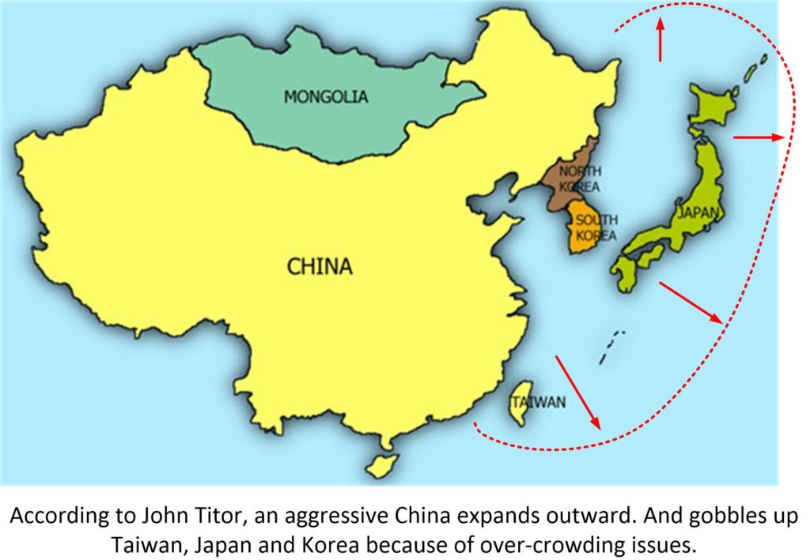
Again. This has very little resemblance to our reality.
He continues on about the World War
And it makes interesting reading.
The “pattern” of exchange in the war will not be a surprise. Many people will perish as a result of starvation and disease. I would also submit that you already know if you’re safe or not. The trick is to not turn off your fear when you’ll need it the most. Australia is sort of interesting in what is unknown. After the war, they were not very cooperative or friendly (can’t blame them really). It is known they did repulse a Chinese invasion and most of their cities were hit. They have a trading relationship with the U.S. but I would characterize them as reclusive and ticked off. When people use phrases like “See what I mean”, “You’re not hearing what I’m saying” or “Something smells fishy”, they are indicating the primary sense they use to process information about a situation. I find it interesting that my credibility and the phrases that describe it hinge on economic terms and whether or not I have something to sell. I don’t. I also don’t know how to clarify my position any better so I would suggest that if what I say angers you, it might be best to just consider it fiction. Soon you’ll get bored and I will leave in a few months. Either way, it won’t be an issue. The “enemy” that was attacked by Russia in the U.S. was the forces of the government you live under right now.
He said that the US attacked Russia, and Russia responded.
He said that an aggressive China invaded Australia. I find that completely and wholly at odds with our present reality. It is so far-fetched and unrealistic that it makes me embarrassed that I even post on of his “predictions” on MM.
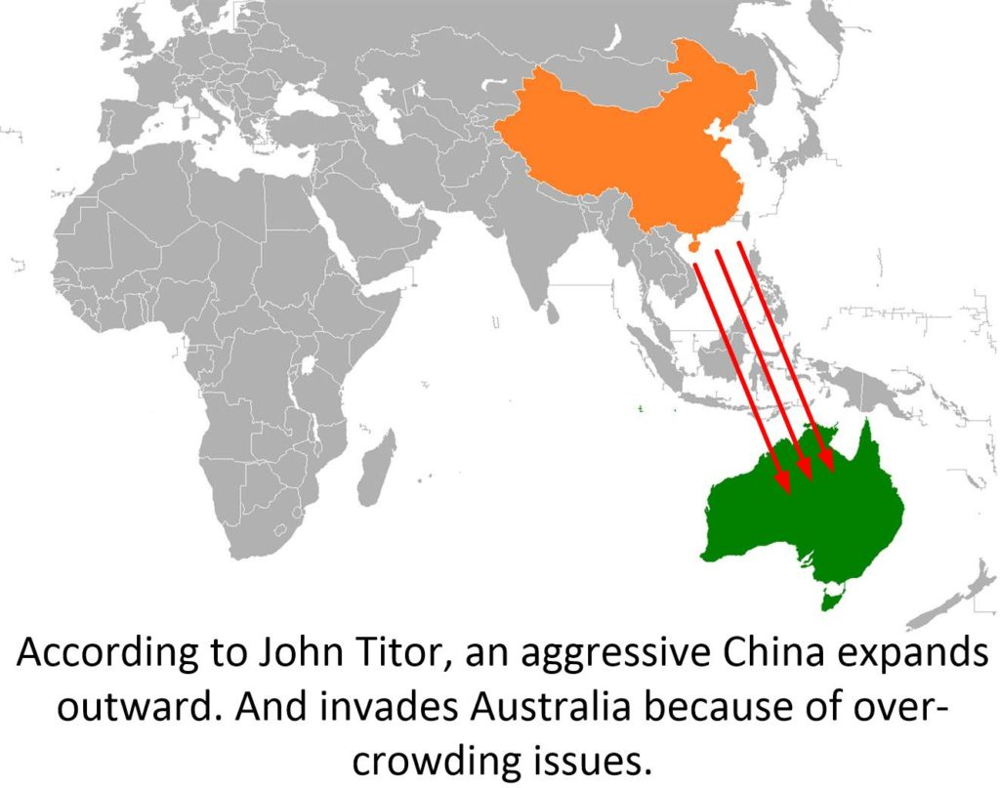
But the distrust that Australia has with America is understandable. This trend is understandable if you are at the very least paying attention to the relationship between Australia and China. Mike Pompeo and Trump worked with Hon Scott Morrison MP to sever ties with China, and trash trade while ramping up the military This has most assuredly tarnished the trading relationship. When Trump left, the ties remained severed and the wounds hurt.
There is a great deal of distrust in the Asia-Pacific rim regarding America right now.
Yes, I think the New World Order idea tried to establish itself. I would consider them the combination of the old U.S. federal system, Europe, Canada and Australia.
He said that…
South America went relatively unharmed. However, there is still a great deal of internal conflict with conventional arms
In regards to the World War III event…
Yes, EMP took out a great number of electronic devices. That’s one of the reasons why we don’t have reliable technology laying around. However, in the opening hours of N Day, the Russians did not launch any high altitude detonations. They knew we would most likely clean up after them so they wanted everyone outside the cities to be able to communicate. Most of the warheads that hit the cities came in threes and exploded close to the ground. The heavy EMP damage was isolated to those areas.
Scary stuff.
I’ve noticed that when most Americans think about Canada in this time, they think about pine trees, chooks and back-bacon. It may interest you to know that most Canadians in 2036 are some of the most efficient, ruthless and dangerous people I know. God help Quebec.
Interesting.
The animal Kingdom is alive and well. I’m sure it suffered but there fewer people infringing on animal’s habitats now. Nuclear war is a very undesirable thing but it is not the end of the world. There are areas and cities we can’t enter and the environment did suffer a great deal of damage but we are recovering. Isn’t Hirroshima a thriving city today? The major physical affects include skin cancer, infertility, infection, etc. Almost everyone has some sort of physical remnant from the war.
The entire country was affected, not just the cities on the coasts.
(5) Were only cities along the Eastern Sea port hit in the Nuclear War, or all over the country? Mostly cities and large military areas in the entire country.
He continues that the War affected the entire world in one way or the other.
(16) Which country gets the worst in the war? Again, the entire world is affected. Even if you don’t take a direct hit, dying crops and no water can ruin your day.
Well, that is interesting, but the lead up does not match what our current reality actually is…
What our current reality describes
Our current reality describes something quite different.
And these differences will shape what the TRENDS will lead us all towards.
I believe, that I cannot prove, that there are elements in the Chinese, the Russia and the American governments that do not want the John Titor scenario to occur, and to this end, they have placed “fail safe” mechanisms in place.
For instance, using China, for I am most familiar with it, the election of Mr. Deng back in the 1970’s completely changed the path and course that China was on. And the ideal for the idealistic fervor for “spreading communism” all over the world ended in the late 1970’s. Of course, no one told that to any Americans. Who still have this terribly distorted idea of what China is like. Which, of course, propagated by endless lies and distortions.
What we see today is a unified Asia falling into place.
Russia and China are teaming up. They have strong agreements with the SE Asian nations, and both the European and Middle Eastern nations.
So let’s look at this.
Firstly, what Americans think about Geo-Political relationships after four years of trump and company…
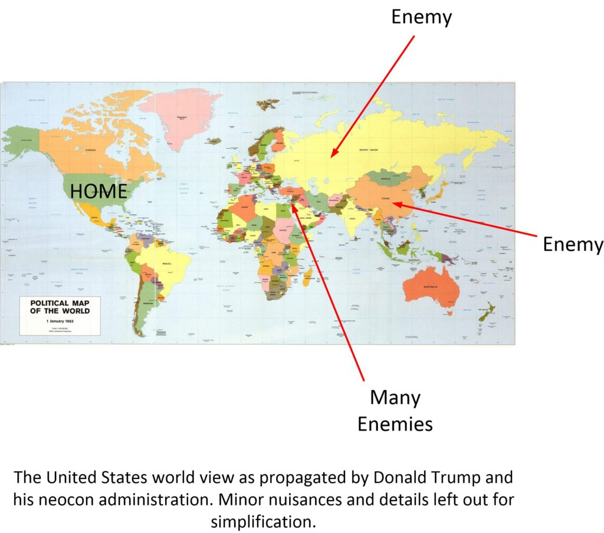
Yes, I know it sounds and looks really bad, but isn’t this the exact way it is? The declared “enemies” of the United States are Iran, Russia, China, and North Korea. And the United States is fighting eight (x8) “hot” wars in the middle east, has over 800 military bases world-wide and is involved in all sorts of hidden wars sponsored by the CIA assets; the NID and NED.
This world view is in complete alignment with the John Titor narrative. It describes how an American conservative might view the world.
Which explains why the United States has so many military bases everywhere
You know “for democracy”.
Here is a map showing where all the military bases are all over the globe.
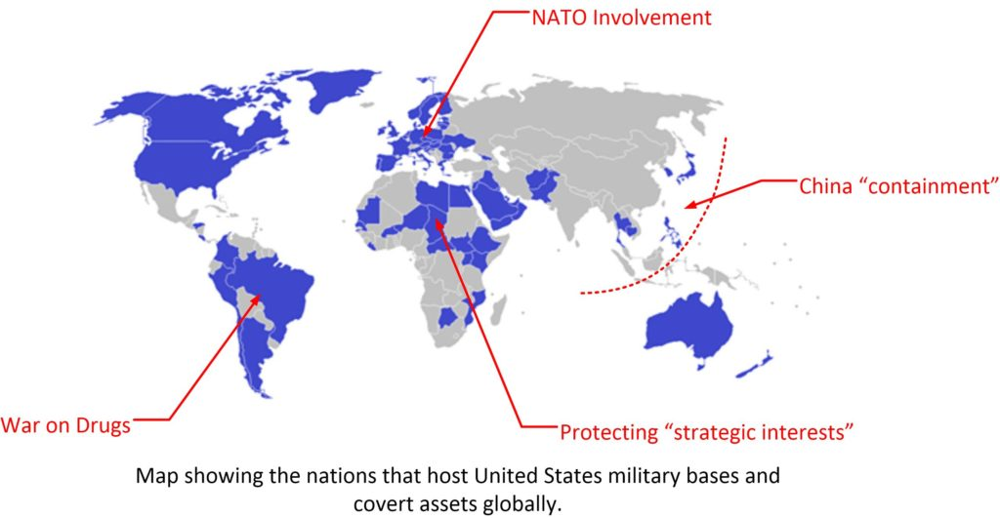
This map gives a distorted illusion. It provides the illusion that everywhere there is an American base, that that nation, country or territory is aligned socially, politically and militarily with the United States. Which isn’t even remotely true.
Now, let’s look at the world differently. Let’s see it as it actually in irregardless to what America or Americans might think about it or now.
The “real” reality 2021
Now this is a very simplified map. And I did so intentionally.
First off, I did not include any of the 8x eight nations that the USA is fighting wars in to be American allies.
Were America to be embroiled in other issues (Civil War, nuclear war, etc.) these nations could quickly flip to neutral or even align with one of America's "enemies". So I did not identify them as American-client-nations.
Taiwan is colored the same color as China, because after all, by UN treaty, and by Taiwanese law, it is a State of China. So this map accurately reflects the world as it is today, not what the USA wants it to be.
Taiwan stopped being an independent nation, and became a Chinese client state in 1972 by [1] The Shanghai Communiqué and the 1982 [2] Joint Communiqué and [3] the August 17 Communiqué. It's the 23rd province of China. All of this his was codified and made permanent on October 1971, when the United Nations General Assembly passed Resolution 2758, which recognized the government of the People’s Republic of China as the only legitimate representative of China at the United Nations and established the One-China Principle.
Smaller nations, too small to color are not colored in. This includes Israel and Hawaii.
Nations in blue are the EU.
They try to be neutral, but their leanings over the last four years has been with their Asian neighbors Russia and China. This is true irregardless to what the American media might try to portray.
Likewise, even though America has military bases in Korea, and Japan, and throughout the SE Asia, these nations align with their larger neighbors, not with far-away America. North Korea might have US bases and an American military presence, but it’s largest trading partner and economic, racial (Han Chinese) and cultural heritage is with China.
Other nations that try to be neutral or independent such as Greenland, or African nations are left uncolored.
India is trying to stay neutral, although it’s ruling class and media are firmly aligned with the United States, but it is large enough to have it’s own yellow color.
Leaving the world, more or less, resembling this kind of map if you cut away all the bull-shit, and look at things from a social-economic perspective. Instead of one related to military might and military activities.
This is the world today, 2021…
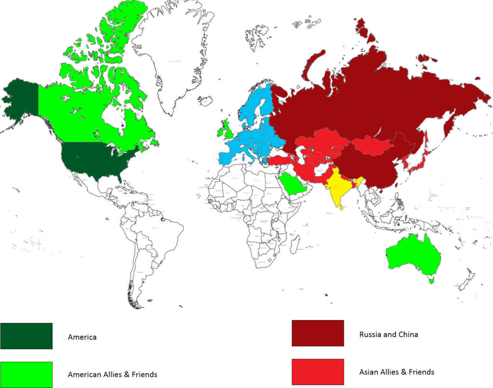
So what do we see?
Look at the map. Can you see something interesting there?
- America is pretty isolated in the world today.
- Major, hard and consistent, American allies include Canada, the UK, and Australia.
- The rest of the world is dominated by Russia and China which hold the lion share of factories, military weapons, political agreements, trade relationships and technology.
- Europe is trying to be neutral, but leans East. Poland is an exception.
- Australia should flip red in the next few years with all the problems that the PM Morrison caused though his alignments with Trump and company.
This is all very interesting. Eh.
It’s not what is being told to Americans through the American media. Instead America is being told to fear the rest of the world or else they will “steal our democracy”, and that America is the biggest, the toughest and the best in the world.
Of course, you could "nit pick" my assumptions and argue that the American neocons are actually correct, and that economic and technological and manufacturing capabilities are over-rated. You could argue that nothing has changed, and that national strength is a function of real and actual strength. If you believe this then maybe you should leave Metallicman and start reading the National Review.
Now, let’s imagine the world in the next four to five years.
The world in 2025.
In this we will follow existing trend lines. We will [1] assume that the USA will spend a significant amount of time, money and resources on domestic issues and problems . Which might include a civil war, or barring that, a civil disturbance.
[2] We assume that there will be repercussions for Morrison siding with Trump in his anti-China stance. And we will see Morrison and his nationalistic party lose the Australian elections.
[3] We will see the Chinese BRI expanding, and trade opening up to Europe.
[4] We will witness a complete pull-out and withdrawal of American troops out of Afghanistan.
[5] We might as well see a changes in political opinion regarding China and India relations. India will then wish to participate in the BRI rather than isolate and trust in the “goodwill” of America.
All of these are all just assumptions and extrapolations from what we are observing.
Resulting in this map…
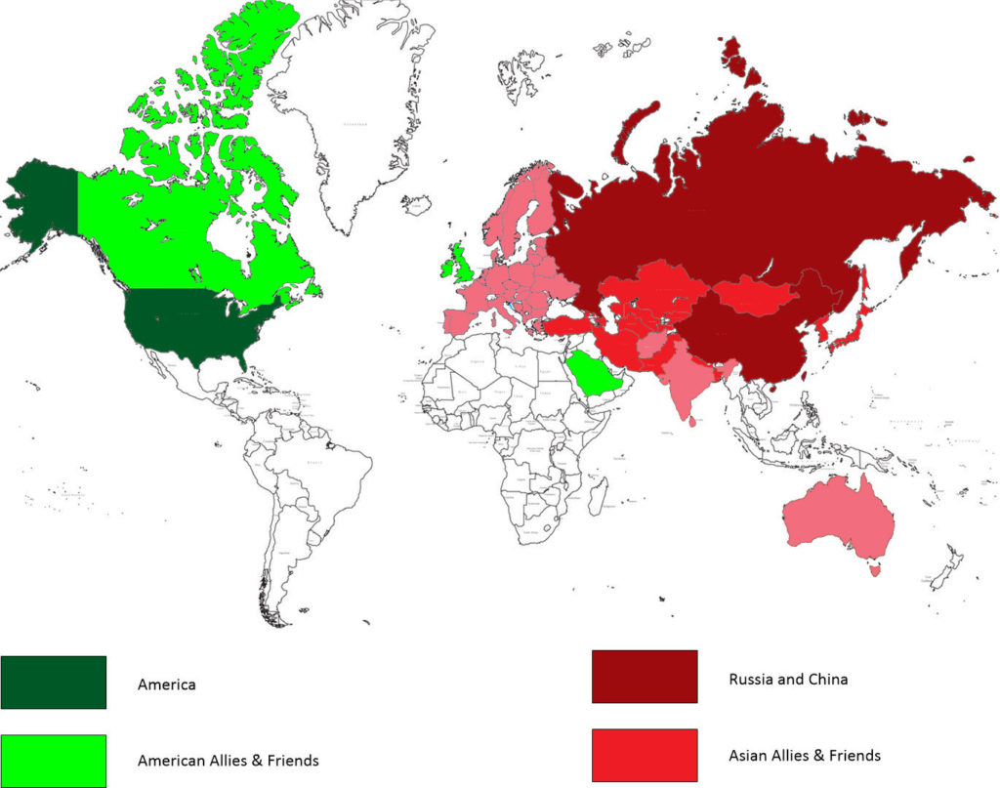
Thus creating a situation of a combined Asia against the United States Empire.
Now, of course this is all extrapolations with some pretty major assumptions, and of course, anything can change in the future. So we will keep things simple…
- A united Asia is rising in power with global reach. It controls most of the world’s factories, a sizable and competitive technological base, and a whole lot of people.
And how America will react to these changes will determine what the future for America and Americans will be.
American reactions to a changing world
Well, we already have seen how a neocon administration (Trump) would react to a changing global situation. But their actions were not very popular. Donald Trump lost his reelection, and the global community has looked askance at the United States ever since.
What will happen in the future is unknown, but if the trends continue as they seem to be doing, then we can expect the following…
- Continued unrest in the United States.
Depending upon how the various State and Federal government handle this unrest will determine whether [1] the unrest will end, or [2] get much worse. My experience with the American government is one that indicates lack of originality, an arrogance and a true lack of creative understanding of the deep and substantive issues that America is embroiled in.
My guess is that…
- The unrest will get worse, and it will be aggravated by cold, uncaring reactive measures taken at the State and Federal level.
Which pretty much means that at some point in time, that…
- Some kind of Second Civil War will occur in the United States. Whether organized in sides, or balkanized, or just manifest as terrorism, there will be shootings and deaths.
And I sincerely hope that this does not happen. If it does it means that the same-old same-old playbook by the oligarchy will continue to play out. Two sides will fight each other, while the rulers watch from the ramparts.
And if the various governments are not able to suppress the domestic unrest, they will “pull out the old playbook”, and attack or try to create some kind of major foreign war as a distraction. Usually, in the past this has typically resulted in the unification of the nation against a foreign foe. However this time, the conditions are quite different. And the results of this action will be terrifying.
- World War III. Russia / and or China will respond to American aggression with a preemptive nuclear salvo.
Conclusions
While the specifics regarding the John Titor narrative have no actual bearing on the realities on this world-line template that we share, the trends and the trend line does. If the current situation DOES NOT CHANGE then we can well expect a gloomy outlook.
It WILL NOT be like John Titor described.
But it will be awful.
What I can say that is the severity of the war that America will be embroiled in will be directly proportional to the arrogance of the American ruling oligarchy.
We will need to watch and see what will happen.
I like to believe that the promises made to me at the ADC Pine Bluff during my retirement has validity. And if so, then what ever occurs in the future will not be as horrible as our fears believe. There will be changes, and in the long term, for our children and for our descendants, the world will become a better place for everyone.